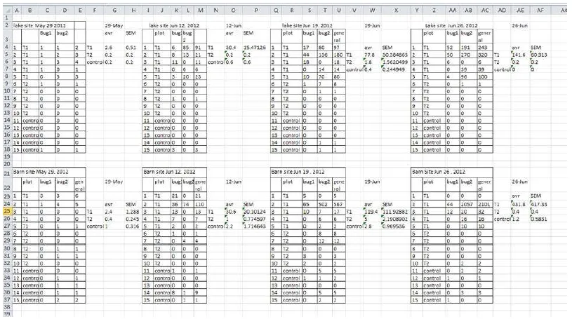
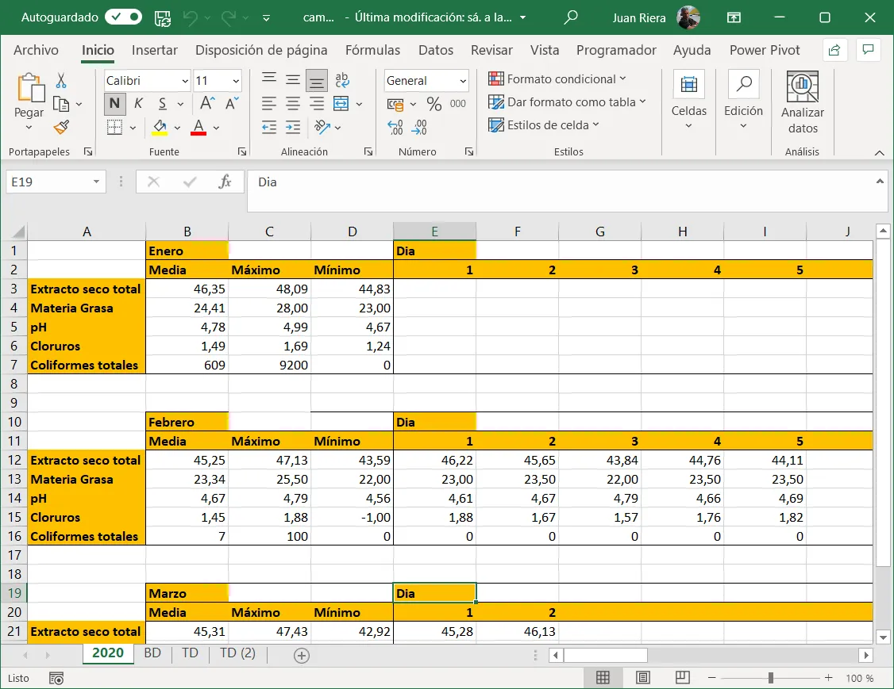
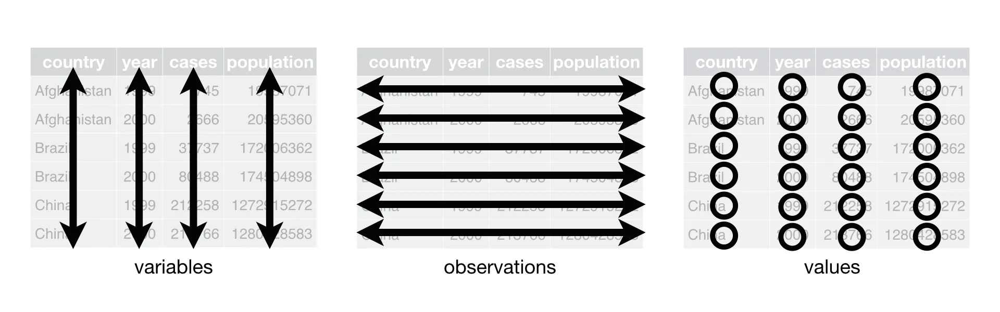
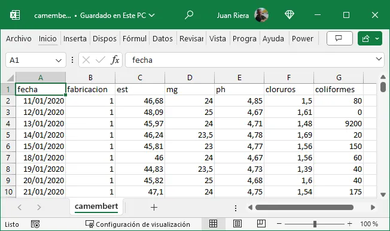
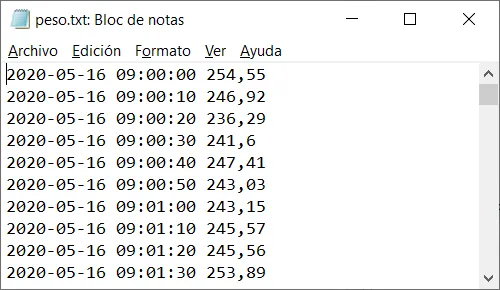
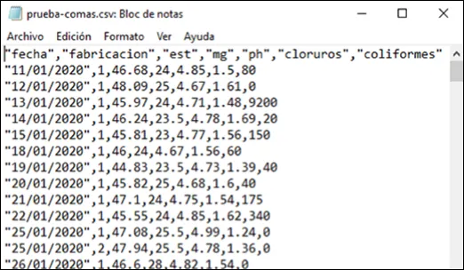
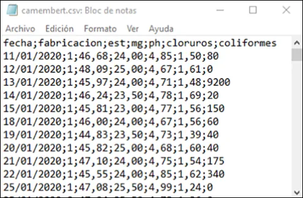

4 Conceptos fundamentales, organización de datos y flujo de trabajo
Al terminar este capítulo, el alumno debe ser capaz de:
- Definir y distinguir los conceptos de población, muestra, parámetro y estadístico, y aplicarlos a situaciones de análisis industrial concretas.
- Identificar y clasificar los tipos de variables —cualitativas y cuantitativas— y asignar nombres válidos a variables según las convenciones establecidas.
- Describir las etapas de un flujo de trabajo estructurado de análisis de datos y explicar por qué es importante seguirlo.
- Reconocer y corregir estructuras incorrectas de almacenamiento de datos en hojas de cálculo, aplicando los principios de los datos ordenados (tidy data).
- Crear, exportar e importar ficheros CSV desde Excel, y comprender su papel en el intercambio de datos entre herramientas.
Los conceptos clave introducidos en este capítulo son: población, muestra, parámetro, estadístico, variable cualitativa, variable cuantitativa, caso, flujo de trabajo, datos ordenados (tidy data), fichero plano, fichero CSV, DataFrame.
4.1 Introducción
En el capítulo anterior vimos que trabajar con scripts en lugar de hojas de cálculo es la base de un análisis reproducible. Pero la reproducibilidad no depende solo de la herramienta: depende también de cómo están organizados los datos. Un script impecable aplicado sobre datos mal estructurados produce resultados incorrectos o ininterpretables. Este capítulo aborda precisamente eso: cómo organizar los datos de forma que sean útiles para el análisis, y cómo estructurar el proceso de trabajo para que sea ordenado, eficiente y reproducible.
Antes de entrar en el flujo de trabajo y la organización de los datos, es necesario establecer un vocabulario común. Las definiciones que siguen son la base conceptual sobre la que se apoya todo el análisis de datos.
4.2 Conceptos básicos: datos, variables y casos
Variables y casos
A los objetos descritos en un conjunto de datos los llamamos casos. Cuando esos objetos son personas, podemos llamarlos individuos; en el entorno industrial, donde los casos suelen ser fabricaciones, lotes, muestras o mediciones, utilizamos la nomenclatura genérica de caso.
Una variable es una característica de un caso que puede ser medida u observada, y que puede tomar diferentes valores en diferentes casos. Por ejemplo, el pH de una muestra de leche, la temperatura de una cuba de cuajado o el peso de un envase son variables. El conjunto de variables medidas sobre cada caso constituye la información que vamos a analizar.
Tipos de variables
No todas las variables son del mismo tipo, y esa diferencia es importante porque determina qué operaciones pueden realizarse con ellas y qué gráficos son apropiados para representarlas.
| Variables cualitativas o categóricas | Variables cuantitativas o métricas | ||
|---|---|---|---|
| Nominales | Ordinales | Discretas | Continuas |
| Valores en categorías arbitrarias | Valores en categorías ordenadas | Valores enteros en escala numérica | Valores continuos en escala numérica |
| Sin unidades | Sin unidades | Unidades contadas | Unidades medidas |
Una variable cualitativa o categórica clasifica los casos en categorías: el tipo de queso, la línea de producción, el turno de trabajo. Con estas variables no tiene sentido hacer operaciones aritméticas directamente, aunque sí podemos contarlas y calcular frecuencias.
Una variable cuantitativa o métrica toma valores numéricos con los que sí tiene sentido operar: sumar, calcular medias, calcular desviaciones. El peso, el pH, la temperatura o el rendimiento quesero son variables cuantitativas.
El término cualitativo proviene de cualidad, no de calidad, y hace referencia a las características o propiedades de un objeto sin implicar juicio de valor. En estadística describe variables que representan categorías o atributos.
La frase, usada a veces, “este envase es muy cualitativo” es incorrecta; lo correcto es “este envase tiene gran calidad”.
Población y muestra
Una población es el conjunto completo de casos que queremos estudiar. En muchas ocasiones la población es demasiado grande para analizarla completamente, por lo que extraemos una muestra: un subconjunto seleccionado para el estudio. El proceso de obtener una muestra se llama muestreo.
Para que los resultados obtenidos a partir de la muestra sean válidos para la población, la muestra debe ser representativa, es decir, debe reflejar adecuadamente las características de la población. Esto se consigue mediante el muestreo aleatorio: cada caso de la población debe tener la misma probabilidad de ser seleccionado.
Imagina que debes analizar el extracto seco de una producción de quesos en maduración. Dado que la cámara está llena y es difícil acceder a su interior, decides tomar tu muestra de los quesos más accesibles, situados cerca de la puerta y a la altura de la vista.
Esta forma de muestrear no es correcta: al seleccionar solo los quesos más accesibles introduces un sesgo. Las condiciones de humedad, temperatura y circulación de aire pueden variar dentro de la cámara, afectando el extracto seco según la ubicación. Para obtener resultados fiables, todos los quesos deben tener la misma probabilidad de ser seleccionados.
La población en este caso es el conjunto total de quesos en maduración dentro de la cámara.
En muchas aplicaciones industriales, definimos la población como todos los resultados que podríamos haber obtenido en las mismas condiciones. A este conjunto lo llamamos población conceptual. Por ejemplo, al medir el pH de varias muestras de leche, la población es el conjunto de todos los valores posibles que podríamos haber obtenido. Muchos problemas de ingeniería y tecnología se refieren a poblaciones conceptuales.
Parámetro y estadístico
Un parámetro es una característica de una población —su media, su variabilidad, su proporción de defectos—. Como la población completa raramente es accesible, estimamos el valor del parámetro a partir de la muestra, calculando un estadístico muestral. El estadístico es un número que resume una propiedad de la muestra y constituye nuestra mejor estimación del parámetro poblacional correspondiente.
En la mayoría de las situaciones reales, nuestros datos provienen de una muestra obtenida de una población. Los estadísticos que calculamos estiman parámetros poblacionales, y esa estimación siempre lleva asociada una incertidumbre.
Reglas para nombrar variables
Nombrar bien las variables es más importante de lo que parece: un nombre claro y consistente evita errores, facilita la lectura del código y permite el intercambio de datos entre herramientas. Las reglas que seguiremos son:
- Los nombres deben empezar siempre por una letra, nunca por un número o un signo especial.
- Solo se usarán letras minúsculas, números y el signo de subrayado
_. - No se usarán espacios, acentos,
ñ(salvo casos justificados), guiones ni paréntesis. - Las palabras se separarán con el signo de subrayado:
temp_cuajo, notemperaturaDelCuajo. - Los nombres serán lo más cortos posible sin perder claridad:
ph_leche_reces preferible apH_de_la_leche_en_recepcion.
| No válido | Válido | Motivo |
|---|---|---|
peso en gramos |
peso_g |
Espacios no permitidos |
pH_Leche_Recepción |
ph_leche_rec |
Mayúsculas y acento |
extracto_seco_total_salida_salmuera |
est_sal |
Demasiado largo |
1er_control |
control_1 |
Empieza por número |
En Python y R usaremos el signo de subrayado como separador, que es la convención estándar en ambos lenguajes (snake_case).
4.3 El flujo de trabajo
Un flujo de trabajo en análisis de datos es un proceso sistemático y estructurado que guía la manipulación, exploración y análisis de los datos desde su recolección hasta la comunicación de los resultados. Es la hoja de ruta que asegura que cada paso se realice de forma ordenada, eficiente y reproducible.
Hadley Wickham [1] —uno de los autores más influyentes en la ciencia de datos moderna— ha propuesto un modelo de flujo de trabajo que se ha convertido en referencia en la disciplina (disponible en español en [2]):

Este modelo integra todas las actividades del análisis: importación y limpieza de datos, transformación, exploración, modelado y comunicación de resultados, dentro de un marco de programación reproducible.
4.4 Etapas de un flujo de trabajo estructurado
Recolección de datos
La primera etapa es obtener los datos desde sus fuentes: archivos CSV, bases de datos, sistemas de captura automática, hojas de cálculo. La calidad del análisis depende directamente de la calidad de los datos recogidos, como se señaló en el capítulo anterior.
Inspección de los datos
Una vez disponibles los datos, se examinan para entender su estructura y contenido: tipos de variables, presencia de valores faltantes o duplicados, rango de los valores, posibles inconsistencias. Esta fase es imprescindible antes de cualquier análisis.
Limpieza de los datos
La limpieza incluye el tratamiento de valores faltantes, la eliminación de duplicados, la corrección de inconsistencias y la conversión de los datos al formato adecuado para el análisis. Es, con diferencia, la fase más larga y laboriosa de cualquier proyecto de datos: se estima que un analista dedica entre el 60 % y el 80 % de su tiempo total a preparar y depurar los datos, y solo el resto al análisis propiamente dicho. Esta proporción sorprende a quienes se acercan por primera vez al análisis de datos, pero refleja una realidad bien documentada: los datos reales raramente llegan limpios, completos y listos para el análisis, independientemente de si provienen de registros históricos, de sistemas automáticos o de mediciones de laboratorio.
Por su extensión y su dependencia del contexto —las técnicas de limpieza varían según el tipo de dato y el problema concreto— esta etapa no se desarrolla de forma abstracta en un único capítulo, sino de forma práctica a lo largo del libro, aplicada a los conjuntos de datos de cada ejemplo. Lo que sí conviene interiorizar desde ahora es su importancia: ninguna herramienta de análisis, por potente que sea, puede compensar datos mal preparados. Como se señaló en el capítulo anterior, garbage in, garbage out.
Transformación de los datos
Los datos se restructuran en formato ordenado o arreglado (tidy), que se desarrolla en la sección siguiente, y se calculan las variables derivadas necesarias para el análisis.
Análisis exploratorio de datos (EDA)
El análisis exploratorio busca entender los patrones y relaciones en los datos mediante estadísticas descriptivas y visualizaciones: medias, medianas, dispersiones, gráficos de distribución y de relación entre variables. Es la fase central de este libro.
Modelado
Dependiendo del objetivo, se pueden aplicar modelos estadísticos para extraer información más profunda: regresión, análisis de tendencias, control estadístico de procesos. El modelado va más allá del alcance introductorio de este libro, pero el flujo de trabajo que aquí se aprende es el mismo que se usaría en análisis más avanzados.
Comunicación de resultados
La última etapa es presentar los resultados de forma clara y efectiva: tablas, gráficos, informes. Un análisis que no se comunica bien no tiene impacto, independientemente de su calidad técnica.
Seguir este flujo de trabajo de forma sistemática garantiza la reproducibilidad del análisis, reduce los errores, facilita la colaboración y permite adaptar el trabajo cuando cambian los datos o los objetivos. La ausencia de un flujo estructurado, en cambio, conduce con frecuencia a errores difíciles de detectar, a análisis que no pueden verificarse y a trabajo que no puede reutilizarse ni compartirse.
4.5 Los datos ordenados o tidy data
El problema: datos mal estructurados
El error más frecuente al almacenar datos en una hoja de cálculo es tratarla como un bloc de notas: anotar de forma libre, colocar varias tablas en la misma hoja, usar pestañas distintas para cada mes o cada año, o mezclar datos y resultados en el mismo espacio. Este tipo de estructura puede resultar cómoda para quien la crea, pero es prácticamente inanalizable por cualquier programa de análisis.

Una variante igualmente problemática es el uso de pestañas para separar períodos de tiempo —una pestaña por mes, una por año—. Si los datos corresponden a las mismas variables medidas en fechas distintas, la solución correcta no es usar pestañas sino añadir una variable de fecha que permita filtrar y seleccionar los datos según el período de interés, manteniendo toda la información en una única tabla coherente.

La solución: tres reglas simples
De la misma manera que la gramática estructura un escrito según reglas comunes, los datos ordenados (tidy data) siguen tres reglas que garantizan una estructura homogénea y analizable [1]:
- Cada variable ocupa una columna.
- Cada observación ocupa una fila.
- Cada valor ocupa una celda.

Estas tres reglas son interdependientes: no es posible cumplir solo dos de las tres. Cuando se respetan, la tabla resultante tiene una estructura rectangular homogénea que puede importarse directamente en Python, R o Excel y analizarse sin necesidad de transformaciones previas.

4.6 Recomendaciones para organizar datos en hojas de cálculo
Los principios de tidy data definen cómo deben estructurarse los datos para el análisis. Broman y Woo [3] los complementan con un conjunto de recomendaciones prácticas específicamente orientadas a quien trabaja con hojas de cálculo en un entorno profesional. Aunque están dirigidas al ámbito científico, son completamente aplicables a la industria alimentaria y quesera.
Las recomendaciones más importantes son:
Sé consistente. Usa siempre los mismos nombres, los mismos códigos y el mismo formato para los mismos conceptos. Si un turno se llama “mañana” en unas filas y “Mañana” o “M” en otras, el software los tratará como tres valores distintos.
Escribe las fechas en formato ISO: AAAA-MM-DD. Excel tiene el hábito de interpretar y reformatear las fechas automáticamente, lo que puede generar errores silenciosos al exportar a CSV. El formato 2024-03-15 es reconocido sin ambigüedad por todos los programas.
No dejes celdas vacías. Una celda vacía puede significar “no se midió”, “el valor es cero” o “es igual al valor anterior” — y ningún programa puede saber cuál de las tres es. Usa un código explícito para los datos ausentes, como NA o nd.
Una sola cosa en cada celda. No combines en una celda el valor y la unidad ("3,4%"), ni dos variables distintas ("turno mañana / operario A"). Cada dato tiene su columna.
No incluyas cálculos en los datos. Las filas y columnas de totales, medias o porcentajes mezcladas con los datos originales rompen la estructura rectangular y dificultan el análisis. Los cálculos se hacen en el script, no en la tabla de datos.
No uses el color o el formato como datos. Si marcas en rojo las celdas con valores fuera de especificación, esa información se pierde al exportar a CSV. Cualquier información relevante debe estar en una columna de texto.
Elige buenos nombres para las variables. Sin espacios, sin caracteres especiales, sin acentos. Preferiblemente en minúsculas y con guión bajo como separador: peso_g, fecha_fabricacion, turno. Son más fáciles de usar en Python y R.
Estas recomendaciones pueden parecer obvias, pero su incumplimiento es la causa más frecuente de errores en el análisis de datos industriales y de tiempo perdido en la limpieza de datos antes de poder analizarlos.
4.7 Ficheros planos y ficheros CSV
Qué son
Un fichero plano es un archivo de texto sin formato donde los datos están separados por espacios o tabulaciones. Muchos equipos de laboratorio y básculas de proceso generan este tipo de archivos, que pueden importarse directamente en Excel, Python o R.
Un fichero CSV (Comma-Separated Values) es un tipo de fichero plano en el que los valores están separados por un carácter especial denominado separador. Existen dos variantes habituales:
- Separador coma
,con punto decimal.— estándar en EE.UU. y Reino Unido. - Separador punto y coma
;con coma decimal,— estándar en España y Europa continental.



La primera fila del fichero suele contener los nombres de las columnas. Los programas de importación se ocupan de la conversión de formatos en la mayoría de los casos.
El fichero CSV es el formato de intercambio de datos más universal: todos los programas de análisis —Excel, Python, R— pueden leerlo y generarlo. Por esa razón es el formato recomendado para almacenar y compartir datos en este libro.
Exportar un fichero CSV desde Excel
Una vez que los datos están correctamente organizados en Excel, podemos exportarlos a CSV para usarlos en Python o R:
- Abre el fichero en Excel.
- Selecciona Archivo > Guardar como.
- Elige el formato CSV (delimitado por comas) (*.csv).
- Guarda el archivo.
Alternativamente, tanto Python como R pueden leer directamente ficheros Excel sin necesidad de exportar a CSV, utilizando las funciones adecuadas de sus respectivas bibliotecas (pandas en Python, readxl en R). En el capítulo siguiente veremos cómo realizar esta importación.
Cuando los datos se importan en Python o R, se almacenan en una estructura denominada DataFrame o cuadro de datos, equivalente a la tabla rectangular de Excel, y sobre la que se realizarán todas las operaciones de análisis.
4.8 Práctica
- En Excel, crea una tabla de datos con al menos tres variables y cinco observaciones, siguiendo las reglas de datos ordenados y la convención de nombres de variables. Guárdala en formato CSV y vuelve a abrirla para verificar que el formato se ha conservado correctamente.
- Practica el uso de Datos > Filtro en Excel para seleccionar observaciones según distintos criterios.
4.9 Para resolver
Escribe cinco ejemplos de nombres de variables relacionados con medidas analíticas o de proceso en quesería —como la temperatura de la leche en recepción o el pH al finalizar la cuajada— y verifica si son válidos según las reglas establecidas. Para los que no sean válidos, propón una alternativa correcta.
4.10 Resumen del capítulo
Este capítulo ha establecido los fundamentos conceptuales y prácticos para organizar los datos antes de analizarlos.
Los conceptos básicos del análisis de datos son: la variable —característica medible de un caso—, el caso —unidad de observación—, y la distinción entre variables cualitativas —que clasifican en categorías— y cuantitativas —que toman valores numéricos con los que se puede operar—. La población es el conjunto completo de casos de interés; la muestra es el subconjunto que analizamos. Un parámetro describe a la población; un estadístico lo estima a partir de la muestra.
El flujo de trabajo es la secuencia ordenada de pasos desde la recolección de los datos hasta la comunicación de los resultados: recolección, inspección, limpieza, transformación, análisis exploratorio, modelado y comunicación. Seguir este flujo de forma sistemática garantiza la reproducibilidad, reduce los errores y facilita la colaboración.
Los datos ordenados (tidy data) siguen tres reglas: cada variable en una columna, cada observación en una fila, cada valor en una celda. Esta estructura rectangular es la única que permite el análisis directo con cualquier herramienta, y evita los errores frecuentes de las hojas de cálculo mal estructuradas.
Los ficheros CSV son el formato de intercambio de datos más universal, legible por Excel, Python y R. Al importarlos en Python o R, los datos se almacenan en un DataFrame, estructura equivalente a la tabla de Excel sobre la que se realizarán los análisis.